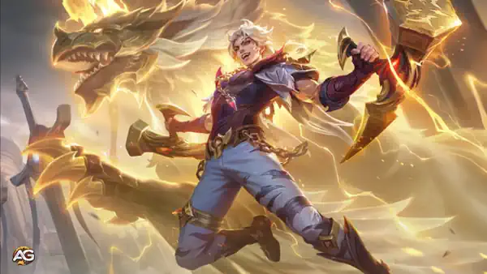

Mobile Legends Bang Bang apresenta Lukas, um herói Lutador dinâmico com capacidades excepcionais de regeneração e dano.
Conhecido como a Fera Sagrada, Lukas possui um poder transformador e um conjunto de habilidades único, tornando-o uma escolha essencial para jogadores que desejam dominar o campo de batalha. Este guia abordará tudo o que você precisa saber para jogar com Lukas como um profissional.
| Visão Geral do Herói | Detalhes |
|---|---|
| Função: | Soldado |
| Estilo de Jogo: | Regeneração, Dano |
| Melhor Rota: | EXP, Selva |
| Tipo de Dano: | Dano Físico |
| Dificuldade de Jogar: | Fácil |
| Melhor Estágio do Jogo: | Início de Jogo |
| Taxa de Vitória: | 51% |
| Taxa de Escolha: | 1,4% |
| Taxa de Banimento: | 35% |
| Lukas Tier List 2025 por Rota | Classificação |
|---|---|
| Tier List da Rota EXP: | S+ |
| Tier List da Rota Selva: | S+ |

Lukas se destaca na categoria de Lutadores com sua habilidade de se adaptar a várias situações. Seu conjunto de habilidades é versátil, oferecendo controle de grupo (CC), sustentação e alto dano. Os jogadores podem aproveitar sua mobilidade e mecânicas de transformação para dominar os adversários, tornando-o uma presença formidável no jogo.
A Determinação do Herói de Lukas gira em torno de sua barra de Determinação, uma mecânica essencial para seu estilo de jogo. Essa barra enche com o tempo ou mais rapidamente ao causar dano a heróis inimigos. Enquanto está na forma de Fera Sagrada, a barra esvazia gradualmente, exigindo gerenciamento preciso para maximizar sua eficácia.
Combo Relâmpago é a habilidade principal de dano de Lukas. Ela é influenciada pelo número de acúmulos de Vigor que ele obtém através de ataques básicos.
Notavelmente, se essa habilidade atingir um herói inimigo, Lukas cura 8% de sua vida máxima, tornando-a uma ferramenta crítica para sustentação durante combates.
Passo Relâmpago melhora a mobilidade e o potencial de ataque de Lukas. Essa habilidade de avanço permite que Lukas se reposicione rapidamente e fortalece seu próximo ataque básico com um piscar para as costas do inimigo, causando dano adicional.
A ultimate de Lukas o transforma na Fera Sagrada, aumentando todos os atributos em 20%. Essa forma proporciona uma vantagem significativa nas batalhas.
Nota: Quando Lukas está na forma de Fera Sagrada, todas as três habilidades são aprimoradas, ganhando efeitos adicionais e maior poder, amplificando ainda mais seu impacto nas batalhas.
Para desbloquear o potencial completo de Lukas, é crucial dominar suas combinações de habilidades e o tempo de execução.
Construir Lukas de forma otimizada garante que ele se destaque tanto na ofensiva quanto na defensiva.
Emblema: Emblema de Lutador para maior roubo de vida mágico e defesa.
Feitiços de Batalha:
Lukas é uma potência em Mobile Legends Bang Bang, oferecendo versatilidade e poder incomparáveis. Ao dominar suas habilidades, timing e builds, os jogadores podem dominar cada partida como a Fera Sagrada. Seja em lutas de equipe ou embates individuais, o estilo de jogo adaptável de Lukas garante uma experiência emocionante. Com prática e estratégia, você estará no caminho certo para se tornar um dos melhores jogadores globais de Lukas.
Você gostou do nosso Guia do Lukas? Há algo que não entendeu ou gostaria de sugerir mudanças? Convidamos você a se juntar à nossa sessão de comentários na página do Alexandre Games Blog. Não hesite em expressar sua opinião, clarificar suas dúvidas e compartilhar sua sugestões.
Clique no botão abaixo para começar: